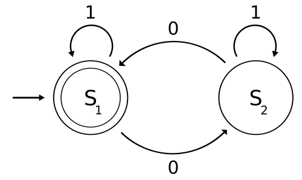

Deterministic finite automata with Java
If you didn’t sit in on Prof. Hopcroft’s lecture on deterministic finite automata (DFA) last Friday in CS 2800, here’s a small crash course: a DFA is a 5-tuple (Q, Σ, δ, q₀, F) where Q is a set of states, Σ is a formal alphabet, δ: Q × Σ → Q is a transition function, q₀ is a start state in Q, and F is a set of accept states in Q. Given this information, we can figure out if a given automata “accepts” an input string built from the Σ by taking the first character in the string, applying the transition function on it and the initial state, and retrieving the returned state. Then, we take the next character and apply the transition function again on it and the aforementioned returned state, and so on. Thus, we transition from state to state until we reach the end of the string. If the final transitioned state is in the set of accept states, then the automata accepts this string. Otherwise, it rejects it. We call the set of strings accepted by an automaton its language.
Now, let’s try an example taken from Wikipedia: construct a DFA whose language are strings from the binary alphabet that contain an even number of 0s. Our automata will be M = (Q, Σ, δ, q₀, F) where Q = {S₁, S₂}, Σ = {0, 1}, q₀ = S₁, F = {S₁}, and δ is defined as follows:
δ: Q × Σ → Q
δ: (0, S₁) ↦ S₂
δ: (0, S₂) ↦ S₁
δ: (1, S₁) ↦ S₁
δ: (1, S₂) ↦ S₂
The following state diagram should clear up any confusion. Note that we start execution on the start state, and run through each character, going from state to state depending on which edge corresponding to the given character we pass, and when we get to the end of the string, the automaton accepts it if we’re on a double-circled (accept) state. Try it out on strings like “0”, “01”, “0010100”, etc.

We can implement such a system in Java by creating an abstract class representing an arbitrary automaton that holds an initial state, transition function, and set of final states that exposes an accepts function that iterates over an input string and transitions from state to state, eventually returning whether the final state exists in the set of accept states.
/**
* Represents a deterministic finite automaton (DFA)
* over a finite set of states Q and an alphabet Σ.
*
* @author Siva Somayyajula (sks266@cornell.edu)
*/
public abstract class DFA<Q, Σ> {
private final Q q0;
private final Set<Q> F;
/**
* Constructs a DFA given the following
* @param q0 a start state
* @param F a set of final/accept states
* */
@SafeVarargs protected DFA(Q q0, Q... F) {
this.q0 = q0;
this.F = new HashSet<>(Arrays.asList(F));
}
/**
* A transition function Q × Σ → Q
* @param q a state
* @param σ a symbol from an input string
* */
protected abstract Q δ(Q q, Σ σ);
/**
* Determines whether or not the automaton accepts:
* @param input the given input string
* */
public final boolean accepts(Iterable<Σ> input) {
Q q = q0;
for (Σ σ : input)
q = δ(q, σ);
return F.contains(q);
}
}Before making the “Even Zeroes” automaton, we first need to define an enumeration representing the binary alphabet.
/**
* Represents the binary alphabet of 0s and 1s.
*
* @author Siva Somayyajula (sks266@cornell.edu)
*/
public enum BinarySymbol {
Z, O // (Z)ero or (O)ne
}Finally, we can implement the automaton. It will extend DFA and implement the transition function while having an internal set of states specific to this machine.
/**
* A DFA that only accepts strings from the binary
* alphabet that contain an even number of 0s.
*
* @author Siva Somayyajula (sks266@cornell.edu)
*/
public class EvenZeroesDFA extends
DFA<EvenZeroesDFA.S, BinarySymbol> {
enum S {
S1, S2
}
public EvenZeroesDFA() {
super(S.S1, S.S1);
}
@Override
protected S δ(S q, BinarySymbol σ) {
switch (σ) {
case Z:
switch (q) {
case S1:
return S.S2;
default:
return S.S1;
}
case O:
switch (q) {
case S1:
return S.S1;
default:
return S.S2;
}
}
throw new RuntimeException("This shouldn't happen");
}
}Here’s a JUnit Theory that runs it against a slew of binary strings of random 0-parity.
import org.junit.experimental.theories.DataPoints;
import org.junit.experimental.theories.Theories;
import org.junit.experimental.theories.Theory;
import org.junit.runner.RunWith;
import java.util.LinkedList;
import java.util.List;
import java.util.Random;
import static org.junit.Assert.assertTrue;
/**
* Tests the validity of EvenZeroesDFA
*
* @author Siva Somayyajula (sks266@cornell.edu)
*/
@RunWith(Theories.class)
public class EvenZeroesDFATest {
private final EvenZeroesDFA even0 = new EvenZeroesDFA();
@DataPoints
public static Iterable<BinarySymbol>[] strings() {
Random r = new Random();
Iterable<BinarySymbol>[] strings =
new Iterable[r.nextInt(1000) + 1];
for (int i = 0; i < strings.length; i++) {
List<BinarySymbol> string = new LinkedList<>();
int l = r.nextInt(1000);
for (int j = 0; j < l; j++)
string.add(r.nextBoolean() ?
BinarySymbol.O :
BinarySymbol.Z);
strings[i] = string;
}
return strings;
}
boolean isEven0(Iterable<BinarySymbol> input) {
// Independently determines whether
// input should be accepted
int count = 0;
for (BinarySymbol σ : input) {
if (σ == BinarySymbol.Z)
count++;
}
return count % 2 == 0;
}
@Theory
public void test(Iterable<BinarySymbol> input)
throws Exception {
assertTrue(isEven0(input) == even0.accepts(input));
}
}If you run this test, you should get a green “All tests passed” or something like that. Basically, it works. That was fun.
But perhaps object-oriented programming isn’t your style? For those who want to take advantage of Java 8’s lambda expressions, the source code for this project on github has a functional programming version of the above. The DFA class becomes concrete and instead expects a transition function as an argument to its constructor, so creating new machines is as simple as instantiating different DFAs. As a result, the “Even Zeroes” automaton and binary alphabet are shoehorned into a JUnit test for simplicity. Anyways, that’s enough for now.